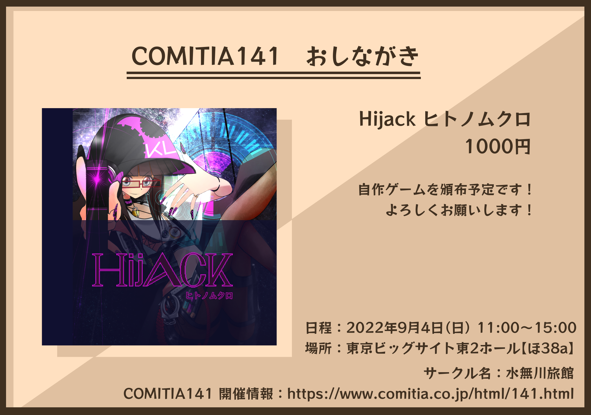

COMITIA141 に参加します
ずいぶんまえから開発していた Hijack というゲームが完成しました。 COMITIA141 で頒布予定です。スペースは【ほ38a】、開催日時は 2022 年 9 月 4 日です。ぜひ会場まできてくださいね。
COMITIA141 開催情報: https://www.comitia.co.jp/html/141.html
(2022-09-03)
おしながき
仕様
Windows 専用のゲームです。 Windows 10, Windows 11 で動作確認済みです。全 5 面です。